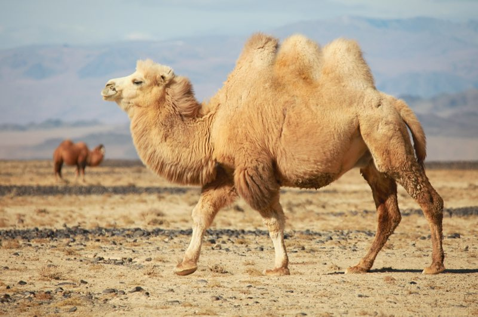

It’s the time of the year when we take a look back at 2025, and compile a brief summary (by numbers) of the Apache Camel project(s).
You can find previous year 2024 numbers here.
Camel 2025 in Numbers
Number of Camel Core / Camel Spring Boot releases in 2025: 25
Number of Camel Quarkus releases in 2025: 18
Number of Camel Karavan releases in 2025: 3
Number of Camel K releases in 2025: 5
Number of Camel Kafka Connector releases in 2025: 6
Number of commits in 2025: 4443 [1]
Total number of JIRA tickets created at end of 2025: 22805
Number of stars on GitHub at end of 2025: 6081
Total number of commits at end of 2025: 78002
Total number of contributors on GitHub at end of 2025: 1128
Number of individual committers doing commits in 2025: 144 [2]
Number of closed pull requests at end of 2025: 20596
Number of closed pull requests in 2025: 3949
Number of users in Apache Camel LinkedIn group at end of 2025: 5756
#1 git shortlog -ns --since 2025-01-01 --until 2026-01-01 | cut -c1-7 | awk '{ SUM += $1} END { print SUM }'
#2 git shortlog --since 2025-01-01 --until 2026-01-01 -ns | wc -l